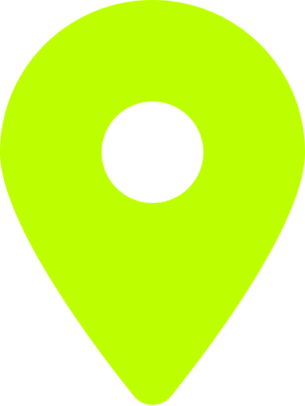

Lycée Henri Nominé, Sarreguemines
CFAI, Henriville
VWB Gersheim, Allemagne
KUHN, Saverne
Metz Numeric School
Passionné par la technologie et l'innovation, j'ai 26 ans et suis en reconversion professionnelle après avoir travaillé en tant que technicien d'usinage. Aujourd'hui, je me spécialise dans le développement web, où je mets à profit ma rigueur, mon esprit analytique et ma volonté d'apprendre pour créer des solutions modernes et efficaces. Toujours curieux et déterminé, je suis enthousiaste à l'idée de relever de nouveaux défis et de contribuer à des projets numériques innovants.